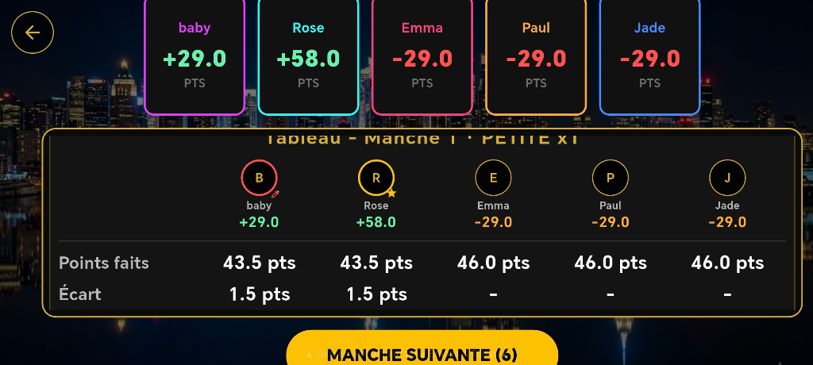
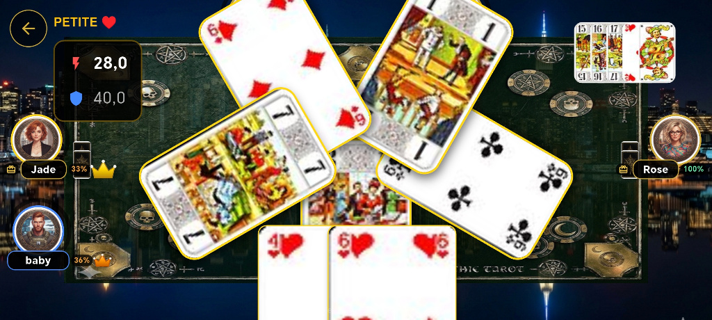

À propos du projet
Tarot Gothique 2026 est un jeu de cartes multijoueur (spécialement conçu pour le tarot à 5 joueurs) doté d'une ambiance sombre et immersive, développé sur Flutter et propulsé par une architecture Supabase ultra-rapide.
Pour valider les exigences de Google Play et stress-tester nos serveurs en conditions realisées, nous recherchons 50 testeurs pour une session de 30 jours.
🎁 Ce que vous y gagnez :
- 100 000 jetons en jeu crédités sur votre compte sous 24h après votre inscription pour tester toutes les tables, tournois et fonctionnalités sans aucune limite.
- Test réciproque garanti : Vous avez un projet en bêta sur le Play Store ? Laissez votre lien, et je m'engage à tester votre application chaque jour en retour ! 🤝
📅 Infos & Horaires des parties
- Compatibilité : Android (Téléphone / Tablette) & PC.
- Heures de pointe : Présence active tous les soirs de 18h00 à 20h00 (Heure de Paris / UTC+2) pour héberger des tables en direct.
- Petite condition : Ouvrir l'application une fois tous les 2 à 3 jours et la garder installée pendant toute la session de test.
🚀 Comment nous rejoindre (2 étapes rapides)
- Rejoindre le Google Group :
Accéder au groupe Google via le lien de la communauté. - Télécharger l'application sur Google Play :
Télécharger la bêta directement sur Google Play.
Galerie & Captures du jeu
Découvrez l'interface immersive, les tournois et les tables multijoueurs :

Machine à sous & jackpot de jetons

Tableau des scores de fin de manche

Table à 5 joueurs & avatars

Partie en cours sur le tapis
Communauté & Support
Besoin de signaler un bug, de discuter stratégie ou d'organiser des parties ?
Rejoindre le Discord